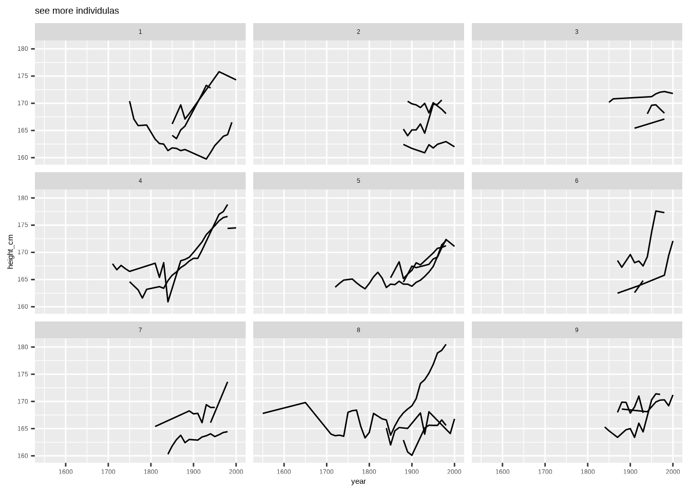
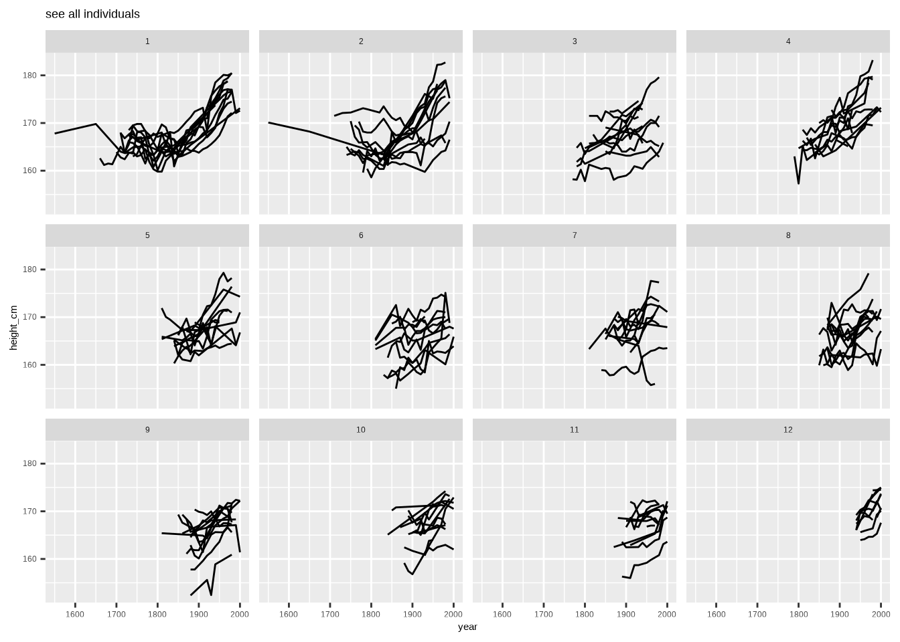
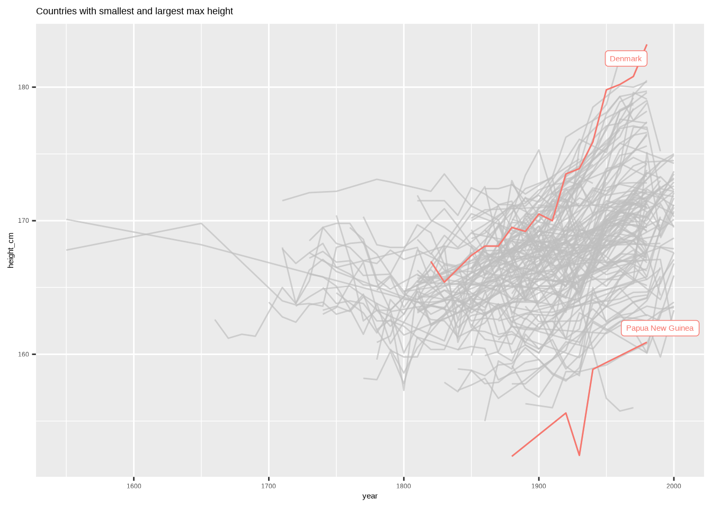
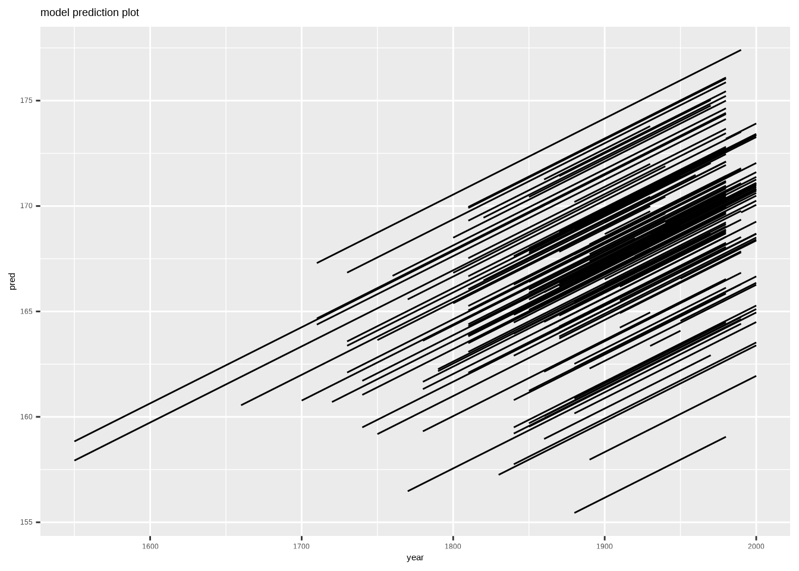
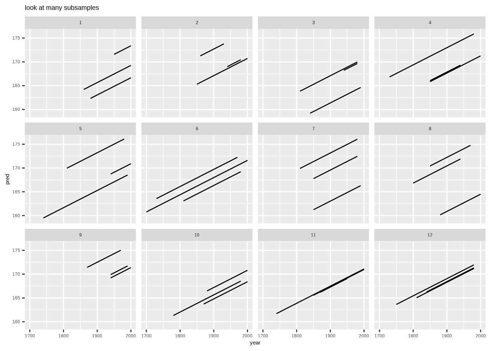
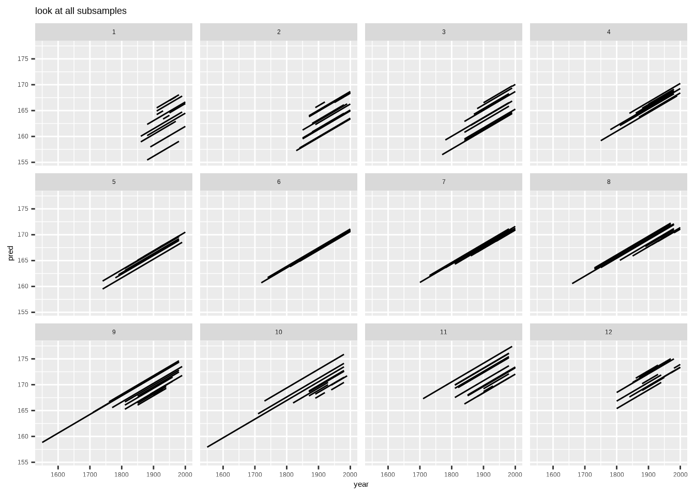
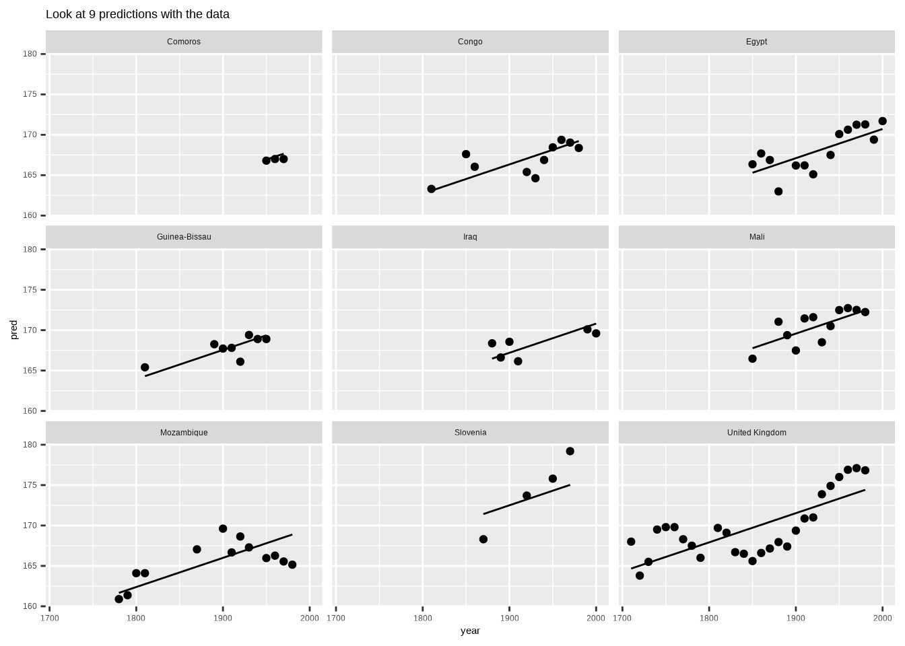

How to make better spaghetti plots
How to explore longitudinal data effectively

Parnian Jahangiri Rad
Parnian Jahangiri Rad
Instructions:
longitudinal data and brolgar package
Dataset : heights from brolgar package
What is longitudinal data?
individuals repeatedly measured through time.
Why brolgar?
Problems of our spaghetti plot:
- Overplotting
- Can not see individuals brolgar package helps us to solve following problems:
- How to look at some of the data?
- How to find interesting observations?
- How to understand a model?
Codes:
library(brolgar)
library(tsibble)
library(feasts)
library(tidyverse)
library(gghighlight)
library(kableExtra)
# remove column 'continent' from dataset(because it is not needed)
heights_data <- heights[,-2]
#an example of longitudinal data
heights_data %>%
filter(country == "Australia") %>%
kbl(caption = "An example of longitudinal data") %>%
kable_material(c("striped", "hover"))
#plot longitudinal data of 144 contries(why brolgar)
ggplot(data = heights_data ,
aes(x = year ,
y = height_cm)) +
geom_line(aes(group = country))Results:
| country | year | height_cm |
|---|---|---|
| Australia | 1850 | 170.000 |
| Australia | 1860 | 170.600 |
| Australia | 1870 | 170.053 |
| Australia | 1880 | 171.100 |
| Australia | 1890 | 171.300 |
| Australia | 1900 | 172.300 |
| Australia | 1910 | 172.700 |
| Australia | 1920 | 172.846 |
| Australia | 1960 | 176.300 |
| Australia | 1970 | 178.400 |

Instructions:
Longitudinal data as a time series
time series:
Anything that is observed sequentially over time is a time series.
With this approach,we can use tsibble package to have special time series that are compatible with brolgar package tools.
as_tsibble: coerce a data frame to tsibble.
parameters:
- index: Your time variable
- key : Variable(s) defining individual groups (or series)
For more information,please visit here.
Codes:
heights_data <- as_tsibble(heights_data,
index = year,
key = country,
regular = FALSE)
heights_dataResults:
## # A tsibble: 1,490 x 3 [!]
## # Key: country [144]
## country year height_cm
## <chr> <dbl> <dbl>
## 1 Afghanistan 1870 168.
## 2 Afghanistan 1880 166.
## 3 Afghanistan 1930 167.
## 4 Afghanistan 1990 167.
## 5 Afghanistan 2000 161.
## 6 Albania 1880 170.
## 7 Albania 1890 170.
## 8 Albania 1900 169.
## 9 Albania 2000 168.
## 10 Algeria 1910 169.
## # … with 1,480 more rowsInstructions:
look at many subsamples using facet_sample
facet_sample helps us to specify:
- numbers of keys per facet by n_per_facet
- number of facets(plots) by n_facets
Codes:
gg_heights <- ggplot(heights_data, aes(x = year,
y = height_cm,
group = country)) +
geom_line()
#see more individuals
gg_heights +
facet_sample(
n_per_facet = 3,
n_facets = 9
) +
ggtitle("see more individulas")Results:

Instructions:
See all individuals along some variable by facet_strata
facet_strata helps us to plot all individuals, and we can arrange them in length by along parameter (along = -year will arrange spaghetti plots from tallest to shortest)
Codes:
gg_heights +
facet_strata(
along = -year
) +
ggtitle("see all individuals")Results:

Instructions:
How to find interesting observations
We would like to find countries with minimum and maximum of max hight.
fit_ranges in features gives us range of data.
Codes:
max_heights <- heights %>%
features(height_cm, feat_ranges) %>%
select(country,max)
interesting_data <- max_heights %>%
filter(max == max(max) | max == min(max))
heights_data %>%
left_join(interesting_data ,by = "country") %>%
as_tibble() %>%
ggplot(aes(x = year,
y = height_cm,
group = country,
colour = "red")) +
geom_line() +
gghighlight(!is.na(max)) +
ggtitle("Countries with smallest and largest max height")Results:

Instructions:
how to understand a model?
We will fit a mixed effects model on our data.
-lmer from lme4 package : fits linear mixed effects model to data.
Codes:
library(lme4)
library(modelr)
# fit a mixed effects model
heights_fit <- lmer(height_cm ~ year + (1|country), heights_data)
heights_aug <- heights_data %>%
add_predictions(heights_fit, var = "pred") %>%
add_residuals(heights_fit, var = "res")
heights_aug
# plot model
gg_heights_fit <- ggplot(heights_aug,
aes(x = year ,
y = pred ,
group = country)) +
geom_line()
gg_heights_fit +
ggtitle("model prediction plot")Results:
## # A tsibble: 1,490 x 5 [!]
## # Key: country [144]
## country year height_cm pred res
## <chr> <dbl> <dbl> <dbl> <dbl>
## 1 Afghanistan 1870 168. 164. 4.59
## 2 Afghanistan 1880 166. 164. 1.52
## 3 Afghanistan 1930 167. 166. 0.823
## 4 Afghanistan 1990 167. 168. -1.04
## 5 Afghanistan 2000 161. 169. -7.10
## 6 Albania 1880 170. 168. 2.39
## 7 Albania 1890 170. 168. 1.73
## 8 Albania 1900 169. 168. 0.769
## 9 Albania 2000 168. 172. -4.14
## 10 Algeria 1910 169. 168. 1.28
## # … with 1,480 more rows
Instructions:
Look at many and all subsamples
We will look at many and all subsamples by facet_sample and facet_strata .
Codes:
# look at 'many' subsamples
gg_heights_fit +
facet_sample() +
ggtitle("look at many subsamples")
# look at 'all' subsamples
gg_heights_fit +
facet_strata(along = -res) +
ggtitle("look at all subsamples")Results:

Instructions:
Look at the predictions with the data
sample_n_keys from brolgar package: helps us to take a random sample of n keys.
Let’s plot predictions of 9 randomly selected countries using sample_n_keys.
Codes:
set.seed(2020-01-21)
heights_sample <-
heights_aug %>%
sample_n_keys(size = 9) %>%
ggplot(aes(x = year,
y = pred,
group = country)) +
geom_line() +
facet_wrap(~country)
heights_sample +
geom_point(aes(y = height_cm)) +
ggtitle("Look at 9 predictions with the data ")Results:
